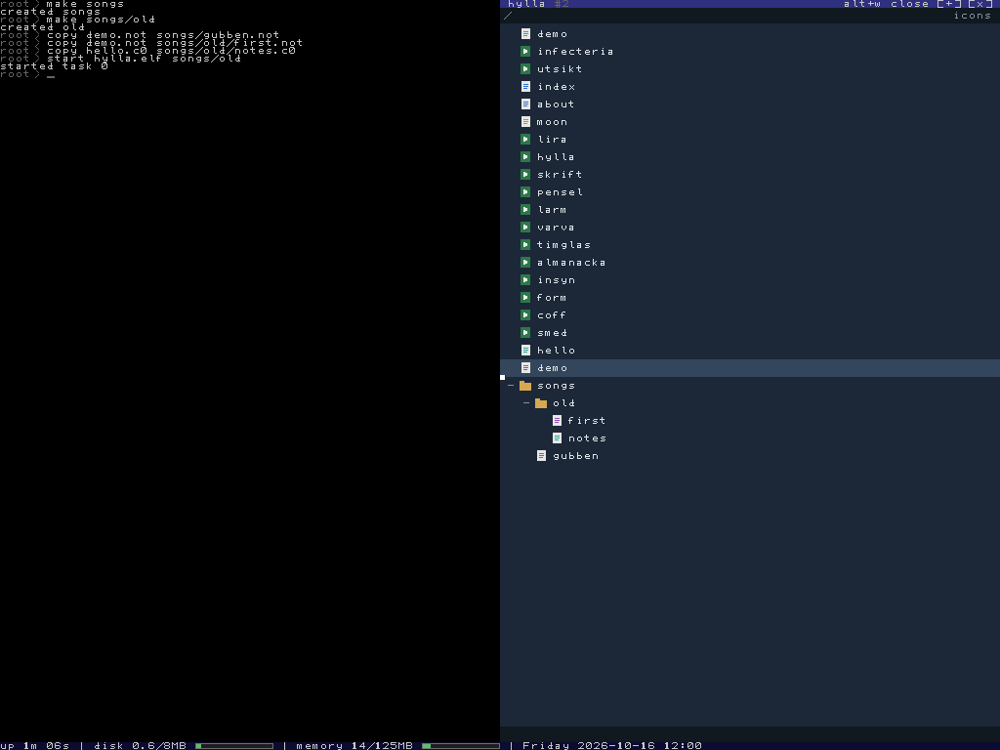

hylla
hylla shows the files and folders of
jakel as icons and opens
whatever is clicked. it is an ordinary ring-3 program, open on the right
after login. it is started from the shell with start hylla.elf.
names are shown without their ending, since the icon already says what a file is. a name too long for its place under the icon goes on over more lines, its row growing to fit. t, or a click on the word at the right of the top bar, switches to a tree of every folder from the root, where a click opens or closes a folder and opens anything else.


finding and opening
hylla does not rename, move or delete anything. names are given in the shell, since hylla is for finding things and opening them. the kind of a file is its ending.
| ending | opens in |
|---|---|
| a folder | hylla itself |
.elf | runs as a program |
.html | utsikt |
.not | lira |
.spr | pensel |
.c0, .txt | skrift |
.form | form |
.sk | runs in a new shell window, see skalman |
backspace goes up a folder and r reads the folder again. the
background is whatever hylla.bg in the root says, a colour such as
#203040 or the name of a picture drawn as tiles.
a picture for the background
tapet.elf makes a picture of a diagonal weave.
start tapet.elf picture.spr 7 64 48 gives the file, a seed, a
width and a height. the same arguments give the same pixels.
write hylla.bg picture.spr tiles it behind the icons.
hylla starts a program only from a file that its user or root owns and
says not started, another user owns and the name when the file
belongs to someone else. a picture another user made can be the
background through hylla.bg, since a picture is data.